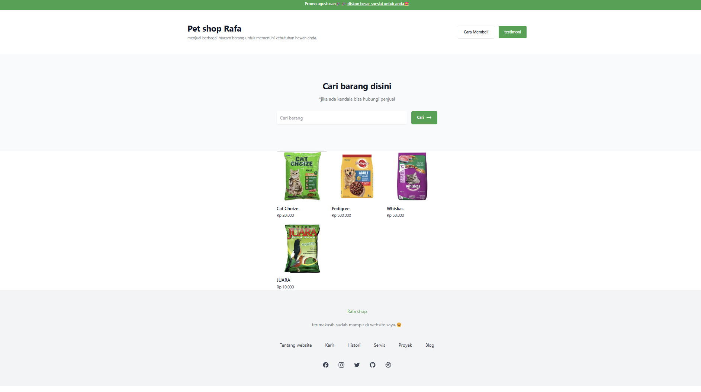
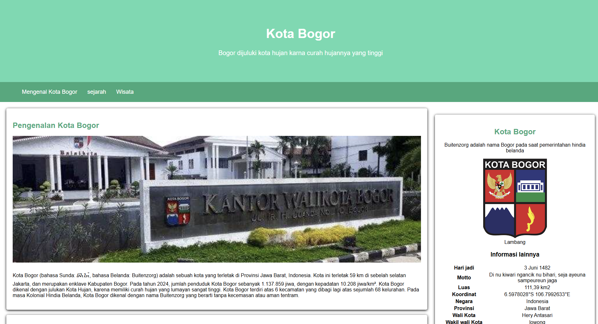
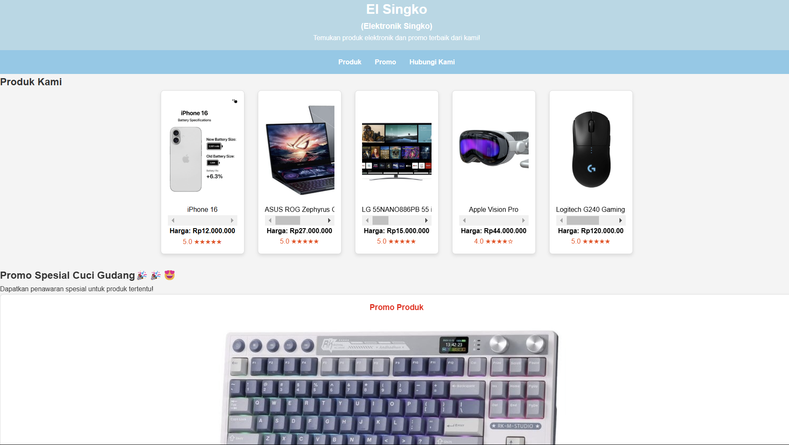

Projek template dari hyper UI

Ini adalah proyek website pertama yang saya buat menggunakan hyper UI untuk mempermudah proses pengembangannya.
Dengan bantuan template ini, saya dapat fokus pada desain dan fungsionalitas, sambil belajar lebih banyak tentang cara membangun website yang menarik dan responsif.
Projek website kota Bogor

Pada proyek ini, saya menerapkan semantic HTML untuk memastikan kode yang saya tulis lebih rapi, mudah dibaca, dan dapat dipahami oleh siapa saja. Tidak hanya sekadar memenuhi tugas, saya memilih Kota Bogor sebagai tema karena keinginan saya untuk memperkenalkan dan membagikan keindahan kota yang saya cintai. Semoga website ini dapat menjadi sarana untuk mengenal lebih dekat pesona dan keunikan Kota Bogor!
Projek toko elektronik

Proyek website kali ini merupakan hasil kolaborasi bersama tim saya. Kami menciptakan sebuah website toko elektronik yang dirancang untuk memberikan pengalaman terbaik kepada pengguna. Dalam pengembangan ini, kami tetap berkomitmen untuk menerapkan semantic HTML agar kode kami lebih terstruktur, mudah dipahami, dan ramah bagi pengembang lainnya. Kolaborasi ini tidak hanya memperkuat hasil akhir, tetapi juga memperkaya pengalaman kami sebagai tim dalam membuat berbagai proyek.